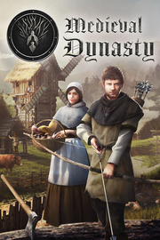

Medieval Dynasty
Detalles
|  | |
| Tiempo de juego | No Jugado |
| Última actividad | Nunca |
| Añadido | 11/6/2024 15:35:16 |
| Modificado | 11/8/2024 12:01:06 |
| Estado de finalización | No Jugado |
| Librería | Playnite |
| Fuente | 2TB GAS |
| Plataforma | PC (Windows) |
| Fecha de lanzamiento | 9/23/2021 |
| Puntuación de la Comunidad | 89 |
| Puntuación de la Crítica | 73 |
| Puntuación de usuario | |
| Género | Acción Aventura Indie Rol Simuladores |
| Desarrollador | Render Cube |
| Editor | Toplitz Productions |
| Característica | Cloud Saves Compat. Total Con Mando Cooperativo Cooperativo En Línea Cromos De Logros De Multijugador Préstamo Familiar Un Jugador |
| Enlaces | Punto de encuentro Discusiones Guías Noticias Página de la tienda PCGamingWiki Logros |
| Tag | Agricultura Ambientales Aventura Construcción Construcción de bases Cooperativos Fabricación Gestión Históricos Medievales Multijugador Mundo abierto Primera persona Realistas Rol Sandbox Simulación Simulador inmersivo Supervivencia Un jugador |
Descripción

Encuentra un trozo de tierra donde construir tu hogar. Empiezas como un simple granjero o cazador, pero después de acumular experiencia, aprender y afinar tus habilidades, puedes convertirte en líder de una ciudad próspera. Diseña, construye y mejora tu casa, desde una sencilla cabaña hasta una extensa granja. Convence a la gente de que se una a tu aldea. Encuentra el amor verdadero y forma una familia para garantizar la continuidad de tu dinastía. Juega en solitario o únete a tus amigos para explorar juntos el bello pero duro mundo medieval en el modo cooperativo.

Te aguarda un enorme mundo abierto. Afronta los calurosos meses de verano y los fríos inviernos y asegúrate de que no os falte de nada tanto a tu pueblo como a ti.
Medieval Dynasty te cautivará con su exclusiva combinación de géneros que ofrece la experiencia medieval definitiva.


Desafía a las estaciones: asegúrate de que tu población y tú no muráis de hambre o sed. Caza animales salvajes, planta cultivos o intercambia recursos para prepararte para todo.

Está en tus manos: no llegarás lejos sin las herramientas adecuadas, ya sea cazando, talando árboles, cosechando o construyendo. Pero presta atención al desgaste para que tu pico no se quede inutilizable en mitad de la nada.

Vive y aprende: desarrolla tu personaje, especialízate o conviértete en un auténtico comodín mientras interactúas con los PNJ, cuidas de tu familia, exploras el exuberante mundo o realizas tareas para otros.

Funda una aldea: eres planificador urbano, constructor y guardabosques, ¡todo en uno! Coordina la distribución, gestiona a los residentes, reúne recursos, produce mercancías y comercia para ayudar a la comunidad a crecer y prosperar.

El mundo medieval, con sus peligros desafiantes y sus preciosos paisajes, está a tu alcance.


- Mundo abierto realista: explora dos extensos mapas, el Valle (en solitario) y el Meandro (en solitario y cooperativo) en un bello mundo abierto.
- Multijugador cooperativo: únete a hasta 4 amigos para una experiencia de juego cooperativo.
- Personalización del personaje: personaliza tu avatar con un detallado creador de personajes.
- Realismo ambiental dinámico: sumérgete en un completo ciclo de 4 estaciones con transiciones dinámicas de día/noche y meteorología realista, siempre interactuando de forma activa con el entorno, desde talar árboles hasta explorar cuevas.
- Diversidad estructural y de interiores: crea una gama diversa de más de 25 edificios, desde humildes chozas hasta robustas casas de piedra, y personalízalos con una selección de más de 120 muebles y piezas de decoración.
- Fabricación exhaustiva: fabrica más de 300 piezas, incluyendo armas, herramientas, muebles y ropa.
- Interacción con la fauna: enfréntate a lobos, jabalíes, ciervos, bisontes y otros animales salvajes que pueblan los bosques.
- Mecánicas de supervivencia: vigila tus niveles de comida, agua, salud y aguante.
- Árbol de habilidades: desarrolla tu personaje adquiriendo nuevas habilidades.
- Eventos únicos: experimenta eventos dinámicos y decisiones con impacto directo en el juego.
- Misiones y economía: lleva a cabo misiones y actividades comerciales y económicas.
- Dinámica social y creación de familia: establece conexiones con PNJ, funda tu propia familia y desarrolla relaciones que pueden llevar a la alegría de la paternidad en el juego y ofrecerte la oportunidad de dejar tu legado a la siguiente generación.
- Entorno interactivo: te cautivará el extenso paisaje que cambia de forma dinámica con tus acciones. Tala árboles, recoge recursos o explora cuevas misteriosas: en todas partes encontrarás algo nuevo que descubrir.